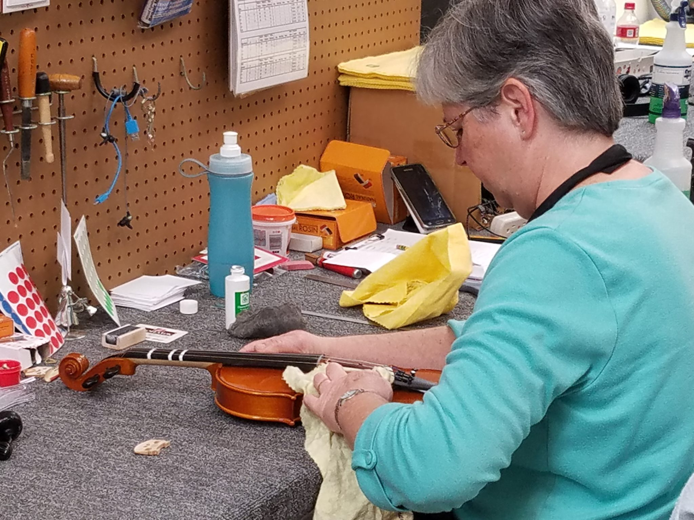
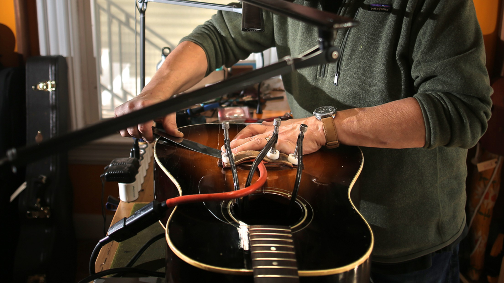

Our Services
Tuning
Tuning an instrument involves adjusting the pitch of its strings or other sound-producing elements to achieve the desired musical notes. This process ensures that the instrument is in harmony with other instruments or reference pitches. Tuning can be done manually using tuning pegs, adjusting screws, or levers, or electronically with the help of tuners or apps that detect and display the pitch of the played notes. The goal is to ensure each string or note produces the correct frequency relative to a standard tuning system, such as equal temperament, so that the instrument sounds in tune across different keys and octaves.
Restringing
Restringing an instrument involves replacing old or worn-out strings with new ones. Over time, strings can lose their tone and intonation, affecting the overall sound quality of the instrument. Restringing ensures that the instrument produces a clear and vibrant tone, allowing musicians to achieve their desired sound. Depending on the instrument, restringing may require specific tools and techniques to properly install the new strings and ensure they are tuned correctly.

Instrument Cleaning and Maintenance
Instrument cleaning and maintenance are essential for preserving the quality and longevity of an instrument. Regular cleaning helps remove dirt, dust, and grime that can accumulate on the surface and inside the instrument, affecting its playability and sound. Additionally, proper maintenance includes lubricating moving parts, tightening loose components, and inspecting for any signs of damage or wear. By keeping the instrument clean and well-maintained, musicians can ensure optimal performance and prevent costly repairs or replacements.
Instrument Repair
Instrument repair involves fixing any damage, defects, or malfunctions that may occur in an instrument. This can include repairing cracks, replacing broken parts, fixing electronic components, and addressing any other issues that affect the instrument's playability or sound quality. Instrument repair requires specialized knowledge and skills to diagnose problems accurately and implement effective solutions while preserving the integrity and originality of the instrument. Whether it's a minor adjustment or a major overhaul, professional instrument repair ensures that the instrument performs at its best and continues to bring joy to musicians for years to come.
